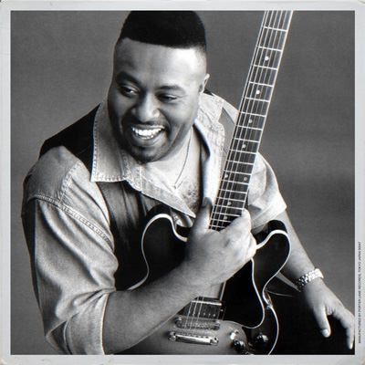
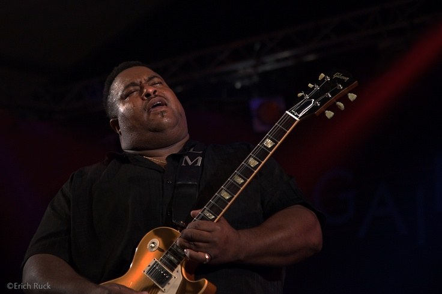

Larry McCRAY 5 апреля в 1960 году (54 г. назад) в Стефенсе, Аризона, родился Ларри МакКрей (Larry McCRAY), певец и гитарист, представитель модерн-блюза, когда он играет в блюз-бэнде, и традиционного - когда выступает как солист.Четверть века спустя после выпуска дебютного альбома гитарист Larry McCray продолжает играть весомую роль в постоянном развитии блюза. И в новом тысячелетии, McCray демонстрирует как твердую приверженность традициям, так и видение новых направлений. Первое влияние на игру на гитаре McCray’я оказала его сестра, Clara, которая гастролировала поблизости Арканзаса со своей собственной группой - Rockets. Она не оставила записи своих песен, в которых много было взято от стилистики Freddie King’а, но её младший брат, по крайней мере частично восполнил это упущение. В 1972 году Larry поехал вслед за Кларой в Saginaw, штат Michigan. Она показала ему музыку трех Королей(B.B., Freddie и Albert’а), Albert Collins’а, Magic Sam. А Larry, добавив в свой арсенал горячих роковых соло в стиле Jimi Hendrix и Allman Brothers, начал выступать в местных клубах со своими братьями – Carl’ом на басу и Steve за ударными. После школы, работа на конвейере компании General Motors отнимала слишком много времени у Larry. Но, в конце концов, он нашел достаточно свободного времени для того чтобы собрать воедино материал альбома Ambition для лейбла Point Blank в подвальной студии его друга, в Детройте. Потрясающий дебют был убедительным сочетанием блюза, рока и соул музыки. Неожиданно молодой, коренастый гитарист едет в тур с товарищем по лейблу - Albert Collins’ом. Следующий его альбом - Delta Hurricane, был спродюсирован ветераном британского блюза Mike Vernon и McCray этот альбом понравился больше своего “домашнего” дебюта. В 1996 году появился альбом Meet Me At the Lake, в 1998м - Born to Play the Blues. В 2000х Larry продолжал выпускать альбомы – 2001 - Believe It and Blues Is My Business, 2006 - Live on Interstate 75 (его первый концертник, записанный в Детройте). Последним альбомом на данный момент является Larry McCray, выпущенный в 2007 году. (Послушать его можно по ссылке: http://vk.com/wall-13370755_2498) © Александр Сомов  |